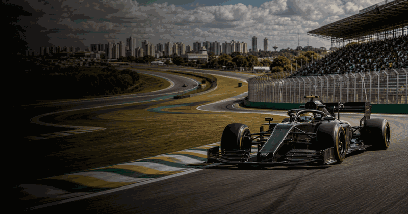
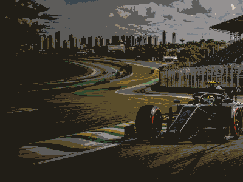

São Paulo Grand Prix
First race1972
CircuitInterlagos
Top 4 race winners

More Formula 1Formula 1 topicMore races, circuits and calendar moments.


More Formula 1Formula 1 topicMore races, circuits and calendar moments.